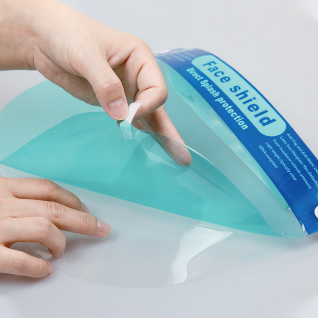

November 23, 2026
Disposable Oxygen Masks and Nasal Cannulas: A Complete Guide for Healthcare Procurement
A comprehensive guide to disposable oxygen masks and nasal cannulas for hospitals, clinics, and medical distributors. Compare oxygen delivery systems, flow rates, materials, and procurement best practices.
Read More →